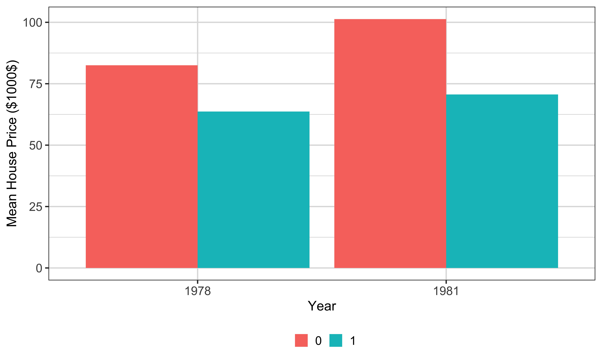
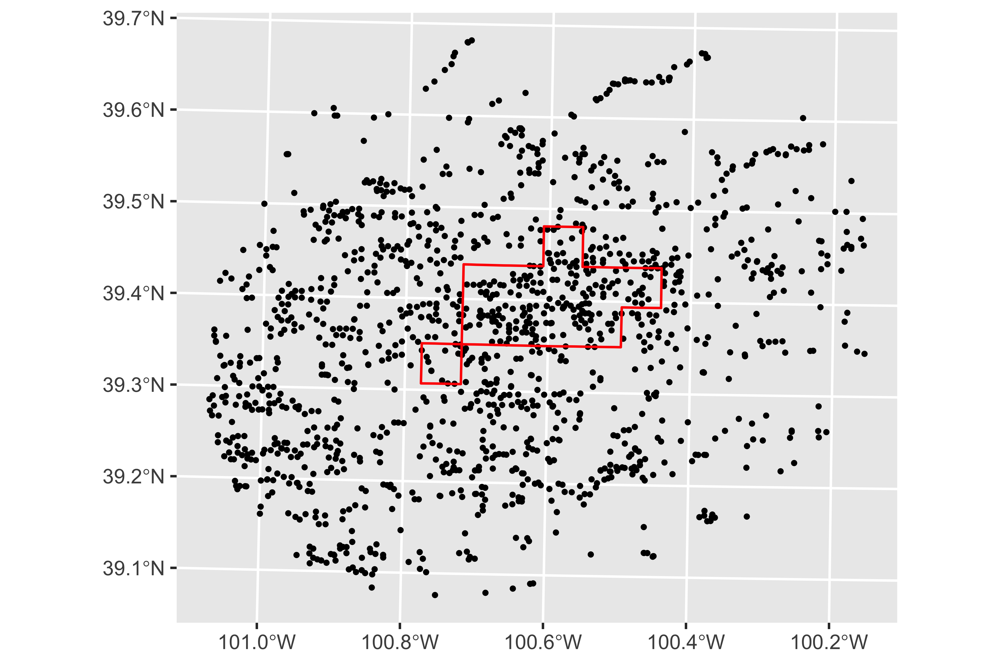
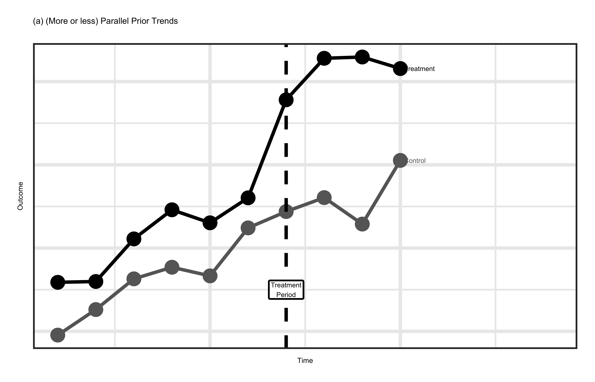
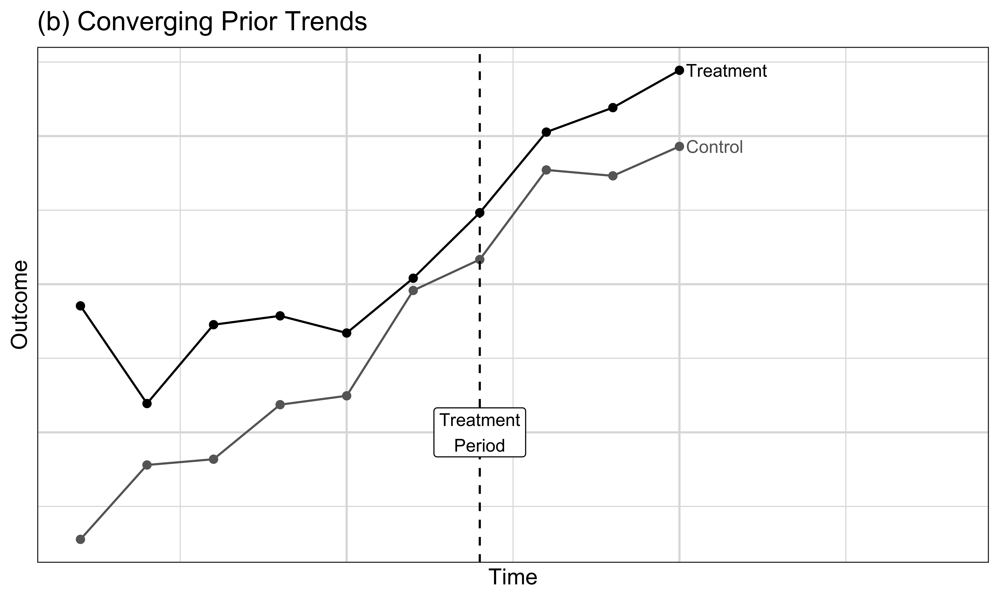
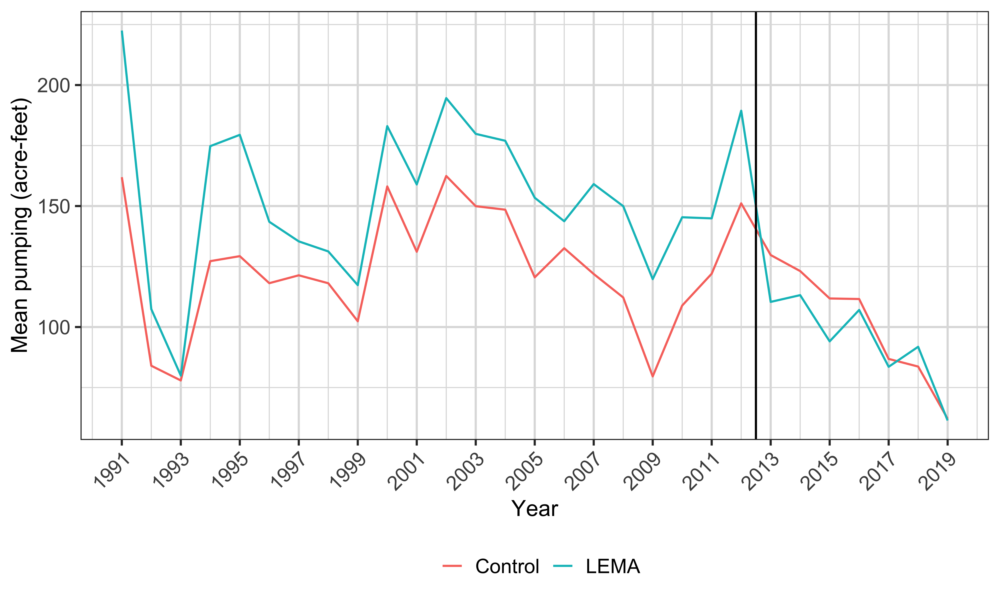

Impact evaluation asks a causal question: what did a program or event change? That is different from simply documenting what happened after the program. Look at the examples. A groundwater-use limit might reduce pumping, a soil-moisture sensor might change irrigation, crop insurance might change input use, job training might raise productivity, and food assistance might affect health or education. In every case, the arrow is a causal claim. You want the outcome with the program minus the outcome the same units would have had without it.
That second outcome is the counterfactual, and it is missing. For example, after a Nebraska well is regulated, you observe its regulated pumping, but you cannot observe that same well, in the same weather and year, pumping without the limit.
Now look at the key-challenge callout. Most programs of interest are not randomized. Farmers choose whether to adopt technology or insurance, workers choose whether to enter training, and eligibility rules direct assistance toward people who already differ from nonrecipients. That self-selection makes program status correlated with other determinants of the outcome, which is the endogeneity problem named at the bottom of the callout. A raw participant-versus-nonparticipant comparison will then mix the program’s effect with those prior differences.
Definition
Impact (program) evaluation is a field of econometrics that focuses on estimating the impact of a program or event.
Examples
Key challenge
Most of the programs you are interested in evaluating are not randomized.
\;\;\;\;\;\;\;\;\;\downarrow
Endogeneity problem arising from self-selection into the program.
Random assignment is the gold standard because it breaks systematic selection into treatment. Each eligible unit has its treatment status assigned by chance, so, in expectation over possible assignments, the treated and control groups have the same distribution of potential outcomes. They may still differ by chance in one realized sample, especially a small one, but assignment does not consistently place high-income or low-income people in one group.
Read the example equation aloud as income equals beta zero plus beta one times program, here financial aid, plus the error term u. Program is one for a person offered or assigned the aid and zero for a control person. Beta zero is the control group’s expected income. Beta one is the difference in expected income between the assigned groups, so under random assignment it is the average causal effect of the offer or program in this simple model. The error u collects all other determinants of income.
The condition underneath says the expected value of u conditional on program status is zero. In words, people assigned to aid do not systematically have higher or lower unobserved income determinants than controls. Random assignment supports that condition. It is why ordinary least squares can consistently estimate beta one as the sample grows.
The problem callout explains why we need this course’s observational designs. Governments and researchers often cannot randomize laws, infrastructure, disasters, or ethically important benefits. We then use events outside our control and ask whether their treatment variation plausibly reproduces the relevant comparison that randomization would have provided. Flip to the next tab for that idea.
Gold Standard
When feasible, a randomized experiment addresses selection bias by randomly assigning units to treatment and control groups.
Random assignment makes treatment status independent of potential outcomes in expectation.
Example
y\;(\text{income})=\beta_0+\beta_1 program\;(\text{financial aid})+u
where E[u\mid program]=0. In this simple setting, OLS consistently estimates the average treatment effect.
Problem
Many programs cannot be randomized for practical, financial, or ethical reasons.
\downarrow
We need to use data from an event that happened outside our control.
A natural, or quasi, experiment begins with an event or policy change that the investigator did not assign. As the definition says, it changes the environment facing individuals, families, firms, cities, or other units. Examples include a law introduced in one state, an infrastructure project placed in one location, or an eligibility cutoff created by an agency. The event generates treatment variation that we may be able to use even though we did not run an experiment.
Do not read the word natural as meaning automatically random. The challenge on the slide is that the researcher did not control treatment assignment. You must study who was exposed, who was not, when exposure began, whether people anticipated it, and whether treatment affected the proposed control group through spillovers. You must also ask why the policy happened where and when it did. If a county adopts a program because its untreated outcome was already worsening, then policy status is related to the counterfactual outcome and the comparison remains endogenous.
A credible natural experiment has a source of variation that is plausibly unrelated to untreated potential outcomes after accounting for the design. That credibility comes from institutional facts and observable evidence, not from the label.
Definition
An event or policy change outside investigators’ control that changes the environment in which individuals, families, firms, cities, or other units operate.
Challenges
Treatment is not assigned by the researcher, so its source of variation must be studied carefully. A credible natural experiment provides variation plausibly unrelated to untreated potential outcomes after conditioning on the design.
There are two objectives in this section. First, you will learn several ways someone might try to estimate the effect of the same program, including difference-in-differences. Second, you will learn why an estimator that is easy to calculate may still be a poor causal design.
As we work through the algebra, keep two questions separate. What descriptive difference does the regression coefficient calculate, and under what assumptions does that difference equal the causal effect? Understanding both the strength and the weakness of each approach means being able to answer both questions.
Discuss different ways of estimating the impact of a program including the difference in differences (DID) method.
Understand the strengths and weaknesses of these methods.
Our program is the construction of an incinerator in North Andover, Massachusetts. The first bullet establishes the timing: rumors about the project began in 1978. The second says construction began in 1981. Houses near the proposed site are the treated group because their location exposes them most directly to possible odors, traffic, pollution, or stigma. Houses farther away are a candidate control group.
The data contain sale prices and other house characteristics in both 1978 and 1981. We will call 1978 the before period because physical construction had not begun, and 1981 the after period because construction had begun. The outcome is the real, inflation-corrected sale price.
Incinerator Construction
Rumors about an incinerator in North Andover, Massachusetts, began in 1978.
Construction began in 1981.
Data collected
Housing prices and other characteristics in 1978 and 1981 provide observations before and after construction began.
This code prepares the data used in all three approaches. The first call asks R to load the data set named keel-m-c from the Wooldridge package. Naming the package matters because it tells the data function exactly where to find that built-in data set. The result contains house sale prices, the sale year, location relative to the incinerator, and observed housing characteristics.
The expression in parentheses both creates an object called data and prints the result on screen. Starting with keel-m-c, the pipe passes the data into as-tibble, which changes the printing and data-frame class without changing the observations. The next pipe passes that tibble into dee-plyer mutate. Mutate replaces real price with real price divided by one thousand. The original variable is measured in dollars, so after this transformation a one-unit coefficient means one thousand inflation-corrected dollars. That scale change affects how we state every estimate, but it does not affect t statistics or p-values.
Two indicator variables will do the main design work. Near-inc equals one for houses near the site and zero for houses farther away. Why eighty-one equals one for 1981 sales and zero for 1978 sales.
Notice also what the rows represent. This is a repeated cross-section, not necessarily a panel of the same houses. We observe sales from each location group in each year, but a house sold in 1978 need not be sold again in 1981.
These three callouts are our roadmap. Approach one uses only the after period, 1981. It compares the mean real price of houses close to the incinerator with the mean for houses farther away. Its implicit counterfactual says the far-house price level in 1981 tells us what nearby houses would have cost in 1981 without construction.
Approach two uses only the treated location group but both years. It compares nearby-house prices before and after construction began. Its implicit counterfactual says the nearby group’s 1978 mean tells us what its 1981 mean would have been without the incinerator.
Approach three combines both dimensions. First find the 1978-to-1981 change for nearby houses. Then find the same change for far houses. Finally subtract the second change from the first. The far group’s change is used as the counterfactual time change for the near group.
Approach 1
Compare houses close to the incinerator site (treated) with houses farther away (control) after construction began (1981 data).
Approach 2
Compare nearby houses before and after construction began (1978 and 1981 data).
Approach 3
Compare the before–after change for nearby houses with the before–after change for houses farther away: difference-in-differences.
Approach one discards the 1978 observations and runs a cross-sectional regression using only 1981 sales. Read the model as real price equals delta zero plus delta one times near-inc plus the error u. Real price is the inflation-corrected house price measured in thousands of dollars. Near-inc is one for a house near the incinerator and zero for a house farther away. Delta zero is therefore the expected 1981 price for far houses. Delta one is the near-versus-far difference in 1981. The error contains every other price determinant not represented by the indicator.
The question at the bottom asks whether near-inc is endogenous. For delta one to identify the incinerator’s causal effect, near-inc must be uncorrelated with the unobserved determinants in u. That is a demanding condition. Location was not randomly assigned. Near and far neighborhoods can differ in school access, lot size, housing quality, transportation, taxes, industrial land use, or general desirability. Those features can affect price and also be correlated with proximity. The composition of houses sold in 1981 can differ as well.
Even if you add observed housing controls, unobserved location differences may remain.
Run regression on the following model using the 1981 data (cross-sectional data)
rprice = \delta_0 + \delta_1 nearinc + u
rprice: house price in real terms (inflation-corrected)
nearinc: 1 if the house is near the incinerator, and 0 otherwise
Question
Is nearinc endogenous?
Look first at the model and remember that near-inc can take only zero or one. For a far house, set near-inc equal to zero. The conditional expected real price in 1981 is then delta zero because the delta-one term drops out and the conditional mean of the regression error is zero. That is the second expectation line in the answer.
For a nearby house, set near-inc equal to one. The expected price becomes delta zero plus delta one, which is the first expectation line. Now subtract the far-group mean from the near-group mean. Delta zero appears in both and cancels, leaving delta one. So delta one measures the 1981 mean price near the incinerator minus the 1981 mean price farther away. Since real price is in thousands, delta one is measured in thousands of inflation-corrected dollars. A negative value means nearby houses are cheaper on average in that year.
This result follows mechanically from a regression with an intercept and one binary regressor. It is a descriptive identity, not yet a causal result.
Model
rprice = \delta_0 + \delta_1 nearinc + u
Question
What does \delta_1 measure?
\delta_1: the difference between the mean price of houses near the incinerator site and the mean price of houses farther away in 1981.
\begin{align*} & E[rprice | nearinc = 1, year = 1981] = \delta_0 + \delta_1 \\ & E[rprice | nearinc = 0, year = 1981] = \delta_0 \end{align*}This means:
\begin{align*} \delta_1 = E[rprice | nearinc = 1, year = 1981] - E[rprice | nearinc = 0, year = 1981] \end{align*}Here the fee-OLS call estimates the model from the previous tab. The first argument is the formula, real price on near-inc. The tilde means real price is the dependent variable and near-inc is the explanatory variable; fee-OLS includes an intercept by default. The data argument supplies only rows produced by filtering data to year equal to 1981. The outer parentheses print the fitted model while also saving it as reg eighty-one.
Read the output in units of thousands of real dollars. There are 142 sales. The intercept is about 101.31, so far houses sold for an average of roughly 101,308 dollars. The near-inc coefficient is about negative 30.69, so nearby houses averaged roughly 30,688 dollars less. Adding the two coefficients gives a nearby mean of about 70.62 thousand dollars. The conventional standard error for the gap is about 5.83, the t statistic is negative 5.27, and the very small p-value rejects a zero 1981 difference under the model’s sampling assumptions.
That strong statistical evidence does not establish causality. It says the post-period location means differ precisely in this sample. It does not say the entire gap was created by the incinerator. If nearby houses were already cheaper before construction, or if the two areas would have changed differently anyway, those components are inside negative 30.69. The reliability question on the slide is therefore a design question, not just a significance question.
Question Is this reliable?
This tab repeats the same cross-sectional comparison using 1978, before construction began. On the left, the model reads real price equals theta zero plus theta one times near-inc plus u. Theta zero is the mean real price of far houses in 1978, and theta one is the nearby mean minus the far mean in that year. On the right, fee-OLS estimates that formula after filter keeps only rows whose year equals 1978. The parentheses print the result and save it as reg seventy-eight.
There are 179 sales in this regression. The intercept is about 82.52, so the far-group mean was roughly 82,517 real dollars. The near-inc coefficient is about negative 18.82, with a standard error of about 4.74 and a p-value near 0.0001. Thus nearby houses averaged about 18,824 dollars less even in the designated before period, and their implied mean was about 63.69 thousand dollars.
That is the critical fact in the blue callout. The 1981 gap of negative 30.69 did not begin from zero. At least negative 18.82 thousand dollars of near-versus-far difference was already visible in 1978. It may reflect stable neighborhood and house differences. That prevents us from assigning the full 1981 gap to construction.
Run regression on the following model using the 1978 data (cross-sectional data).
\begin{align*} rprice = \theta_0 + \theta_1 nearinc + u \end{align*}\theta_1 represents the difference between the mean house price of houses nearby the incinerator and the rest (not nearby) before the incinerator was built.
Critical
Prices of houses near the incinerator site were already lower than prices of houses farther away before construction began.
This graph displays the four cell means behind every calculation in the incinerator example. The horizontal axis is year, with 1978 on the left and 1981 on the right. The vertical axis is mean real house price in thousands of dollars. Within each year, the two differently shaded bars correspond to near-inc zero, the far group, and near-inc one, the nearby group. The bars are placed side by side by the dodge position rather than stacked, so their heights can be compared directly.
In 1978, the far-group mean is about 82.52 thousand dollars and the near-group mean is about 63.69. Their gap is negative 18.82. In 1981, the corresponding means are about 101.31 and 70.62, giving the negative 30.69 gap from Approach one. The graph therefore makes the critical baseline difference visible: nearby houses did not start at the same level.
Now read the graph across time within each group. Far-house prices rise by about 18.79 thousand dollars, from 82.52 to 101.31. Near-house prices rise by only about 6.93, from 63.69 to 70.62.

This slide gives us notation for decomposing the four bars. Do not confuse these gamma, alpha, and beta symbols with the delta and theta coefficients from the separate cross-sectional regressions. Here they label underlying group-time means.
In the table, near-inc zero is the far, control group. Its before mean is gamma zero. Its after mean is gamma zero plus alpha zero plus zero. Alpha zero is the control group’s 1978-to-1981 change caused by everything other than the incinerator, and the final zero records that the control group receives no treatment effect. Near-inc one is the nearby, treated group. Its before mean is gamma one. Its after mean is gamma one plus alpha one plus beta. Alpha one is the treated group’s counterfactual change from all non-incinerator causes. Beta is the true causal effect of construction on nearby-house prices.
Now look at the Approach one algebra. We take the treated after mean, gamma one plus alpha one plus beta, and subtract the control after mean, gamma zero plus alpha zero plus zero. Regrouping terms gives gamma one minus gamma zero, plus alpha one minus alpha zero, plus beta. The first nuisance term is the pre-existing price-level difference. The second is the difference in untreated price changes. Approach one therefore combines both sources of confounding with the causal effect.
The answer at the bottom gives sufficient conditions for this expression to equal beta. Gamma one must equal gamma zero, so the groups start at the same mean, and alpha one must equal alpha zero, so they would experience the same untreated change. Having a control group is not enough. Approach one uses its after level, so it needs both restrictions. The 1978 estimates already show that the equal-baseline condition fails in the sample.
| treated | before | after |
|---|---|---|
| nearinc = 0 | \(\gamma_0\) | \(\gamma_0 + \alpha_0 + 0\) |
| nearinc = 1 | \(\gamma_1\) | \(\gamma_1 + \alpha_1 + \beta \) |
New notation
From here on, \gamma, \alpha, and \beta describe the four underlying group-time means. They are not the \delta’s and \theta’s from the two cross-sectional regressions above.
\gamma_j is the average house price of those that are nearinc=j in 1978 (before)
\alpha_j is the change caused by all factors other than the incinerator between the before and after periods for houses with nearinc=j.
\beta is the true causal impact of the incinerator placement
What did we estimate with Approach 1?
Question
Under what sufficient conditions would Approach 1 identify the incinerator’s effect?
\gamma_1=\gamma_0: the two groups had the same average house price before construction.
\alpha_1=\alpha_0: absent the incinerator, the two groups would have experienced the same price change from 1978 to 1981.
Approach two changes the comparison dimension. Instead of comparing locations in one year, restrict the data to nearby houses and compare that treated group before and after construction began. Both 1978 and 1981 observations are used, but no far-house observations enter this regression.
Read the model as real price equals beta zero plus beta one times why eighty-one plus u. Real price is still the inflation-corrected sale price in thousands of dollars. Why eighty-one is a time indicator: it equals zero for 1978 and one for 1981. When it is zero, the expected nearby-house price is beta zero. When it is one, the expectation is beta zero plus beta one. Beta one is therefore the treated group’s change in mean real price between the two years.
Estimation strategy
Compare prices of nearby houses before and after construction began (1978 and 1981 data).
Data
Restrict the data to the houses that are nearby the incinerator.
Model
rprice=\beta_0+\beta_1y81+u
rprice: house price in real terms (inflation-corrected)
y81: 1 for an observation from 1981 and 0 for an observation from 1978
Set the time indicator in the model to its two possible values. For nearby houses observed in 1978, why eighty-one equals zero. The conditional expected real price is beta zero, which is the first line in the answer. For nearby houses observed in 1981, why eighty-one equals one. The expectation is beta zero plus beta one, which is the second line.
Now subtract the 1978 expectation from the 1981 expectation. Beta zero cancels, so beta one equals the 1981 nearby-house mean minus the 1978 nearby-house mean. That is why the blue answer describes beta one as the before-after difference in the treated group. Its unit is thousands of inflation-corrected dollars. A positive beta one means nearby prices rose on average; a negative value means they fell.
This coefficient is descriptive until we supply a counterfactual assumption.
Model
rprice=\beta_0+\beta_1y81+u
Question
What does \beta_1 measure?
\beta_1: the difference in the mean house price of houses nearby the incinerator before and after the incinerator was built
\begin{align*} & E[rprice | nearinc = 1, year = 1978] = \beta_0 \\ & E[rprice | nearinc = 1, year = 1981] = \beta_0 + \beta_1 \end{align*}This means:
\begin{align*} \beta_1 = E[rprice | nearinc = 1, year = 1981] - E[rprice | nearinc = 1, year = 1978] \end{align*}This fee-OLS call implements Approach two. The formula puts real price on why eighty-one, and the data argument filters the sample to near-inc equal to one, so only nearby houses remain. There is no object name on the left of an assignment here; the outer parentheses simply ensure that the fitted model prints.
The regression uses 96 nearby-house sales. The intercept is about 63.69, which reproduces the 1978 nearby mean in thousands of real dollars. The why-eighty-one coefficient is about positive 6.93, so the 1981 mean is roughly 6,926 dollars higher than the 1978 mean. Its standard error is about 8.21, the t statistic is about 0.84, and the p-value is about 0.40. Thus the sample change is positive, but it is not statistically distinguishable from zero at conventional levels.
Do not conclude that the incinerator helped house prices. A harmful incinerator effect can be more than offset by a rising regional housing market, leaving a positive net before-after change. In the other direction, a falling market could make a harmless program look damaging. The slide’s sentence correctly says that this comparison alone does not attribute the change to the incinerator.
The average price of nearby houses increased between 1978 and 1981, but the estimated change is not statistically significant. This before–after comparison alone does not attribute the change to the incinerator.
Return to the four-cell table. Gamma j is the 1978 mean for group j, alpha j is that group’s change from every cause other than the incinerator, and beta is the true effect of the incinerator on the nearby group. For Approach two, we use only the near-inc-one row.
The nearby after mean is gamma one plus alpha one plus beta. The nearby before mean is gamma one. Subtracting before from after gives open parenthesis gamma one plus alpha one plus beta close parenthesis minus gamma one. The two gamma-one terms cancel, leaving alpha one plus beta. This cancellation is why Approach two is not biased by a fixed difference between the initial price levels of near and far houses. Indeed, gamma zero never enters the calculation.
The remaining problem is alpha one. That symbol is the treated group’s counterfactual price change, the movement that would have occurred between 1978 and 1981 without the incinerator. For Approach two to identify beta, the sufficient condition in the answer requires alpha one to equal zero. In words, absent construction, average nearby-house prices would have remained exactly constant. Real housing prices routinely move because of market conditions, financing costs, amenities, and sale composition, so zero untreated change is generally not credible.
| treated | before | after |
|---|---|---|
| nearinc = 0 | \(\gamma_0\) | \(\gamma_0 + \alpha_0 + 0\) |
| nearinc = 1 | \(\gamma_1\) | \(\gamma_1 + \alpha_1 + \beta \) |
\gamma_j is the average house price of those that are nearinc=j in 1978 (before)
\alpha_j is the change caused by all factors other than the incinerator between the before and after periods for houses with nearinc=j.
\beta is the true causal impact of the incinerator placement
What did we estimate with Approach 2?
\begin{align*} & E[rprice|nearinc = 1, year = 1981] \\ & \;\;- E[rprice|nearinc = 1, year = 1978] \\ & \;\;= (\gamma_1 + \alpha_1 + \beta) - \gamma_1 \\ & \;\;= \alpha_1 + \beta \end{align*}Question
Under what sufficient condition would Approach 2 identify the incinerator’s effect?
\alpha_1=0: absent the incinerator, the average price of nearby houses would not have changed between 1978 and 1981.
Difference-in-differences follows the three red-highlighted steps on the slide. First, calculate the 1978-to-1981 change for houses close to the incinerator. That treated-group change contains both its untreated movement and the construction effect. Second, calculate the same before-after change for houses farther away. Since those houses are not treated, their change is used to represent the time movement that nearby houses would also have experienced without construction. Third, subtract the far-group change from the near-group change. That is the difference of the two differences.
Unlike Approach one, we now use all four cells: near and far observations in both 1978 and 1981. Read the regression as real price equals beta zero, plus beta one times why eighty-one, plus beta two times near-inc, plus beta three times the product of near-inc and why eighty-one, plus u. Beta zero is the far-group 1978 mean. Beta one is the far group’s 1978-to-1981 change. Beta two is the near-versus-far gap in 1978. The interaction equals one only for nearby houses in 1981, so beta three is the additional change for the nearby group beyond the far group’s change.
That interpretation shows how the regression performs DID. The treated main effect absorbs the fixed baseline location gap, the time main effect absorbs the change shared with controls, and the interaction measures what remains.
Estimation strategy (difference-in-differences or DID)
Compare the before–after change in prices for nearby houses with the before–after change for houses farther away.
Find the difference in the price of the houses close to the incinerator before and after the incinerator was built
Find the difference in the price of the houses far away from the incinerator before and after the incinerator was built
Find the difference in the differences
Data
Use all observations from 1978 and 1981 in both the treated and control groups.
Model
rprice=\beta_0+\beta_1y81+\beta_2nearinc+\beta_3(nearinc\times y81)+u
To confirm the interpretation of beta three, plug zero or one into the two indicators for each group-time cell. Start with far houses in 1981. Why eighty-one is one, near-inc is zero, and their product is zero. Their expected real price is beta zero plus beta one, which is the first expectation on the left.
For nearby houses in 1981, both indicators and their product equal one. The expectation is beta zero plus beta one plus beta two plus beta three. For far houses in 1978, both indicators are zero, so only beta zero remains. For nearby houses in 1978, why eighty-one is zero and near-inc is one, so the expectation is beta zero plus beta two. These four expressions also reveal the meanings of the main effects: beta zero is the control baseline, beta one is the control time change, and beta two is the baseline group gap.
Now follow the right column. The treated group’s before-after difference is its 1981 expectation minus its 1978 expectation: beta zero plus beta one plus beta two plus beta three, minus beta zero plus beta two. Beta zero and beta two cancel, leaving beta one plus beta three. The control group’s before-after difference is beta zero plus beta one minus beta zero, which leaves beta one.
Finally, subtract the control change from the treated change. Beta one plus beta three minus beta one equals beta three. That is the DID coefficient. Notice why the model includes both main effects with the interaction. Without them, the interaction would be forced to represent baseline or common-time differences as well. The saturated two-by-two specification assigns one fitted mean to each of the four cells, and beta three is exactly their difference-in-differences.
Let’s confirm that \beta_3 represents the difference-in-differences.
Model
rprice=\beta_0+\beta_1y81+\beta_2nearinc+\beta_3(nearinc\times y81)+u
Expected house price
E[rprice|year=1981, nearinc = 0] = \beta_0 + \beta_1
E[rprice|year=1981, nearinc = 1] = \beta_0 + \beta_1 + \beta_2 + \beta_3
E[rprice|year=1978, nearinc = 0] = \beta_0
E[rprice|year=1978, nearinc = 1] = \beta_0 + \beta_2
Differences
E[rprice|year=1981, nearinc = 1] - E[rprice|year=1978, nearinc = 1]
= (\beta_0 + \beta_1 + \beta_2 + \beta_3) - (\beta_0 + \beta_2) = \beta_1 + \beta_3
E[rprice|year=1981, nearinc = 0] - E[rprice|year=1978, nearinc = 0]
= (\beta_0 + \beta_1) - \beta_0 = \beta_1
Difference-in-differences
(\beta_1 + \beta_3) - \beta_1 = \beta_3
This fee-OLS call estimates the saturated two-by-two model. In an R formula, near-inc times why eighty-one expands to the near-inc main effect, the why-eighty-one main effect, and their interaction. The vee-cov argument requests heteroskedasticity-robust standard errors, allowing the error variance to differ across observations. The data argument uses all 321 sales from both years and both location groups.
The intercept is 82.52, the far-group mean in 1978. Near-inc is negative 18.82, the 1978 baseline gap. Why eighty-one is positive 18.79, the far group’s change from 1978 to 1981. The interaction near-inc colon why-eighty-one is negative 11.86. That last number also equals the nearby increase of 6.93 minus the far increase of 18.79. In substantive units, nearby prices changed about 11,864 real dollars less favorably than far prices.
The robust standard error for the interaction is about 8.64, producing a t statistic near negative 1.37 and a p-value around 0.17. The point estimate is negative, but it is not statistically distinguishable from zero at conventional levels. Do not reverse that statement into proof of no effect; the interval is wide enough to contain economically meaningful values.
More importantly, robust standard errors address uncertainty when the error variance is not constant. They do not make the control group’s trend a valid counterfactual. A causal interpretation of negative 11.86 requires parallel untreated trends, no anticipation, no treatment spillover into far houses, and stable composition of the repeated cross-sections. Statistical inference and research-design credibility solve different problems.
The DID point estimate is negative, but it is not statistically significant. It has a causal interpretation only under the DID identifying assumptions.
Use the mean table to connect the regression coefficient to the causal decomposition. The nearby group’s after mean is gamma one plus alpha one plus beta, and its before mean is gamma one. Subtracting cancels gamma one and leaves alpha one plus beta. The far group’s after mean is gamma zero plus alpha zero, and its before mean is gamma zero. Subtracting cancels gamma zero and leaves alpha zero.
The downward arrow tells you to subtract those two changes. Treated change minus control change is alpha one plus beta minus alpha zero. Rearranging gives alpha one minus alpha zero plus beta, which is the expression labeled beta-hat D-I-D. This is an estimand decomposition: the calculated DID equals the true causal effect plus the difference between the groups’ untreated changes.
Notice what has disappeared. Gamma one minus gamma zero, the fixed baseline price gap, is nowhere in the final expression. The groups may start at very different price levels and DID can still work. Also, any time shock that moves both groups by the same amount appears in both alpha terms and cancels.
The answer gives the identifying condition: alpha one equals alpha zero. In words, without the incinerator, near and far houses would have experienced the same 1978-to-1981 change in average real prices. Under that equality, alpha one minus alpha zero is zero and beta-hat D-I-D equals beta. Unlike Approach one, DID does not require gamma one to equal gamma zero. Unlike Approach two, it does not require the common untreated change to be zero.
| treated | before | after |
|---|---|---|
| nearinc = 0 | \(\gamma_0\) | \(\gamma_0 + \alpha_0 + 0\) |
| nearinc = 1 | \(\gamma_1\) | \(\gamma_1 + \alpha_1 + \beta \) |
What did we estimate with Approach 3?
\begin{align*} & E[rprice|nearinc = 1, year = 1981] \;\; - E[rprice|nearinc = 1, year = 1978] \;\; = (\gamma_1 + \alpha_1 + \beta) - \gamma_1 = \alpha_1 + \beta \\ & E[rprice|nearinc = 0, year = 1981] \;\; - E[rprice|nearinc = 0, year = 1978] \;\; = (\gamma_0 + \alpha_0) - \gamma_0 = \alpha_0 \end{align*} \begin{align*} \downarrow \end{align*} \begin{align*} \widehat{\beta}_{DID} = \alpha_1 - \alpha_0 + \beta \end{align*}Question
Under what condition would Approach 3 identify the incinerator’s effect?
\alpha_1=\alpha_0: absent the incinerator, the two groups would have experienced the same change in house prices from 1978 to 1981.
Unlike Approach 1, DID allows the groups to have different pre-treatment price levels because that fixed difference cancels out.
Parallel trends is the key condition that alpha one equals alpha zero. In this example it says that, if construction had not occurred, average real prices for nearby houses would have changed from 1978 to 1981 by the same amount as average prices for far houses. The groups do not need equal levels. One series can remain consistently above the other. What must match is the untreated change over the comparison period.
The general statement on the slide applies the same logic to any DID design. If treatment had not occurred, the treated group’s average outcome would have changed by the same amount as the control group’s average outcome. This is a claim about potential outcomes under no treatment, not a requirement that the observed post-treatment lines stay parallel. If treatment works, the observed treated trajectory should be allowed to separate from the control trajectory after treatment.
The red phrase says the assumption is not directly testable. After treatment, we observe the treated group’s outcome under treatment, not its outcome under no treatment. That missing counterfactual is exactly what the assumption supplies, so the decisive equality cannot be checked in the post period.
With several pre-treatment periods, you can compare earlier trends. Divergence before treatment is evidence against the assumption. Similar pre-trends are reassuring but cannot prove that no group-specific shock would have emerged after treatment.
Key condition (parallel-trends assumption)
\alpha_1=\alpha_0: absent the incinerator, the two groups would have experienced the same change in house prices from 1978 to 1981.
Parallel-trends assumption in general
If treatment had not occurred, the average outcome for the treated group would have changed by the same amount as the average outcome for the control group.
Important
This assumption is not directly testable because the treated group’s untreated post-treatment outcomes are never observed. Pre-treatment data can reveal evidence against the assumption, but cannot prove it.
This slide places the three estimands side by side. Approach one, the post-only near-versus-far comparison, equals gamma one minus gamma zero, plus alpha one minus alpha zero, plus beta. It retains the baseline level difference and the difference in untreated changes. To isolate beta, it needs equal starting means and equal untreated changes.
Approach two, the nearby before-after comparison, equals alpha one plus beta. The fixed starting level cancels, but the entire untreated time movement of the treated group remains. It isolates beta only if alpha one is zero, meaning the outcome would not have changed at all without treatment.
Approach three, DID, equals alpha one minus alpha zero plus beta. It removes the fixed baseline gap. It also removes time shocks common to both groups because those contribute equally to alpha one and alpha zero. It isolates beta when the untreated changes are equal, the parallel-trends condition.
The four important bullets prevent a ranking based only on convenience. None of these approaches is automatically credible. Approaches one and two usually require particularly severe restrictions, but DID is not assumption-free. Look at the numerical example at the bottom. If the treated group would have risen by five without treatment while the control group would have fallen by five, alpha one minus alpha zero equals five minus negative five, or ten. DID would then exceed the true effect by ten units. Even if beta were zero, the estimator would report ten.
DID is attractive because equal untreated changes can be more plausible than equal levels or zero change, especially with a carefully chosen control group. Whether it is plausible is a substantive question.
Approaches
Approach 1: (\gamma_1 - \gamma_0)+ (\alpha_1 - \alpha_0) + \beta
Approach 2: \alpha_1 + \beta
Approach 3: \alpha_1 - \alpha_0 + \beta
Important
None of these approaches is automatically credible; each relies on identifying assumptions.
Approaches 1 and 2 require especially strong restrictions on baseline differences or untreated changes.
DID removes fixed baseline differences and common time shocks, making it attractive when parallel trends is credible.
DID can still be badly biased when treated and control groups would have followed different untreated trends.
e.g., \alpha_1 = 5 and \alpha_0 = - 5
This historical example concerns cholera in mid-nineteenth-century London. The first two bullets contrast the leading explanations. Many people believed cholera spread through contaminated air, the miasma theory. John Snow argued instead that transmission occurred through water contaminated with fecal matter.
Several private companies supplied London households with water from the River Thames. Their intake points mattered because water drawn downstream of central London received heavy sewage contamination. The crucial event occurred between the cholera epidemics of 1849 and 1854. In January 1852, the Lambeth Company moved its intake upstream, beyond the influence of London’s sewers. Southwark and Vauxhall continued drawing from a polluted downstream location.
That change creates the natural experiment. Access to Lambeth water became access to a cleaner source, while the other suppliers remained a comparison.
Cholera
Setting
Several competing companies supplied London households with water drawn from different parts of the River Thames.
Intakes downstream of central London were heavily contaminated by sewage.
Natural Experiment
Define treatment carefully here. It is increased access to cleaner upstream water supplied by Lambeth, not merely residence in London and not Lambeth service in every year. Lambeth changed the quality of its source when it moved the intake. The relevant exposure is therefore being in a district with access to Lambeth after that move.
The time comparison uses two epidemics. Before means 1849, when Lambeth still took water downstream and its customers did not yet receive the cleaner-source treatment. After means 1854, when Lambeth drew upstream. The control group consists of districts served only by Southwark and Vauxhall, whose intake remained at the polluted downstream location. The treated group consists of districts with access to Lambeth as well as other suppliers. The wording matters: treatment is not necessarily a perfectly exclusive supplier assignment, so the estimand reflects access and the district-level supplier mix represented in the table.
The control group’s mortality change is supposed to capture epidemic-wide changes between 1849 and 1854, such as weather, population conditions, or the overall severity of cholera. The treated group’s change contains those shared forces plus the effect of cleaner water.
Treatment
Before and After
Control and Treatment Groups
The table has the four means needed for DID. Rows identify the supplier groups, columns identify the 1849 before epidemic and the 1854 after epidemic, and every entry is cholera mortality measured as deaths per 10,000 people. For districts served only by Southwark and Vauxhall, mortality rises from 134.9 to 146.6. The control-group change is therefore 146.6 minus 134.9, or positive 11.7 deaths per 10,000.
For districts with access to Lambeth plus other suppliers, mortality falls from 130.1 to 84.9. The treated-group change is 84.9 minus 130.1, or negative 45.2. Notice that the groups begin at fairly similar mortality levels, but DID would not require that equality.
The displayed equation subtracts the control change from the treated change: negative 45.2 minus positive 11.7 equals negative 56.9. Equivalently, read the full line as open parenthesis 84.9 minus 130.1 close parenthesis, minus open parenthesis 146.6 minus 134.9 close parenthesis. The negative sign means mortality changed downward by 56.9 more deaths per 10,000 in the Lambeth-access districts.
Under parallel trends and the remaining assumptions, access to Lambeth’s cleaner upstream water reduced cholera mortality by about 56.9 deaths per 10,000 people. The arithmetic alone does not establish waterborne transmission. Credibility comes from the intake relocation, the comparison suppliers, stable exposure composition, and the absence of another group-specific change. The source link identifies Snow’s 1855 account.
Data
Supplier | 1849 | 1854 |
|---|---|---|
Southwark & Vauxhall only | 134.9 | 146.6 |
Lambeth + other suppliers | 130.1 | 84.9 |
DID estimate
The outcome is cholera mortality per 10,000 people. The DID estimate is
(84.9-130.1)-(146.6-134.9)=-56.9.
Under parallel trends and the other DID assumptions, access to Lambeth’s cleaner water reduced cholera mortality by about 56.9 deaths per 10,000 people. Data are adapted from Snow (1855).
Now we implement DID with well-level groundwater-use data from Kansas. The code reads the serialized R object in the file L-E-M-A underscore data dot R-D-S and assigns it to lema-data. Read-R-D-S reconstructs the single R object stored in that file. The outer parentheses make R print the object immediately after assigning it, so you can inspect the columns and repeated site-year rows rather than assuming the import worked.
One row is one observation for a well in a year. Site is the well identifier. Year records the calendar year, and the data run from 1991 through 2019. A-f-used is the dependent variable, the amount of groundwater pumped in acre-feet. In-L-E-M-A equals one for wells inside the policy region and zero for wells outside. The data contain 34,125 well-year observations from 1,383 wells, of which 201 are in the LEMA and 1,182 are controls. Not every well appears in every year, so this is an unbalanced panel.
The printed data also include p-r, precipitation, and e-t-zero, reference evapotranspiration. Those weather variables help control for changing water demand. Available water capacity and bulk density are soil characteristics, but they are not used directly in the displayed regressions.
Well-level groundwater use data in Kansas
site year af_used in_LEMA pr et0 awc bulkdensity
<int> <num> <num> <num> <num> <num> <num> <num>
1: 160 1991 195.328540 1 401.9 1047.3311 0.1859333 1.359156
2: 160 1992 62.390479 1 463.9 904.0815 0.1859333 1.359156
3: 160 1993 40.214699 1 615.6 842.7572 0.1859333 1.359156
4: 160 1994 155.113840 1 405.5 1028.4635 0.1859333 1.359156
5: 160 1995 103.093132 1 488.5 890.5116 0.1859333 1.359156
---
34121: 82261 2019 5.277566 0 598.4 961.0884 0.2078054 1.383747
34122: 82288 2018 0.007672 0 425.7 1069.7815 0.1823573 1.269078
34123: 82538 2017 195.000000 0 563.2 1027.4662 0.2063358 1.287400
34124: 82538 2018 158.000000 0 554.7 1092.2203 0.2063358 1.287400
34125: 82538 2019 136.000000 0 544.8 1011.2639 0.2063358 1.287400Main variables
site: wellaf_used: groundwater used (dependent variable)in_LEMA: indicator equal to 1 for wells inside the LEMA regionyear: yearTreatment is defined spatially on this slide. In the map, each black point is a groundwater well. The horizontal axis is longitude, running roughly from 101.0 degrees west on the left to 100.2 degrees west on the right. The vertical axis is latitude, from about 39.1 degrees north at the bottom to 39.7 degrees north at the top. The irregular red polygon is the LEMA boundary. Wells inside that boundary are the treated units, and wells outside are the candidate controls.
The policy timing is below the map. Beginning in 2013, pumping by wells inside the LEMA became subject to an allocation limit. Before therefore means every observation through 2012, while after means 2013 onward. Treatment is the combination of place and time: an inside well is not yet exposed before 2013, and an outside well is not directly exposed after 2013.
Control and Treatment Units

Before and After
Beginning in 2013, groundwater pumping by wells inside the LEMA became subject to an allocation limit.
The first code line creates the time component of treatment. Mutate takes lema-data and adds a variable called before-after. Inside mutate, if-else checks whether year is greater than or equal to 2013. It returns one when that condition is true and zero otherwise. The result is assigned back to lema-data. Thus 1991 through 2012 are coded zero, and 2013 through 2019 are coded one.
The next pipeline is a coding check. Starting from lema-data, select keeps only site, year, and before-after so the relevant columns are easy to read. Filter then keeps site equal to 160 and years greater than 2000. In the printed rows, before-after remains zero through 2012 and switches to one in 2013. It stays one in every later observed year. Site 160 has no printed 2018 row, which is a reminder that the panel is unbalanced, not evidence that the indicator switched back.
Treatment-group membership does not need to be created because in-L-E-M-A already equals one for wells inside the boundary and zero outside.
Data transformation:
Before or after
Take a look at one of the wells:
site year before_after
<int> <num> <num>
1: 160 2001 0
2: 160 2002 0
3: 160 2003 0
4: 160 2004 0
5: 160 2005 0
6: 160 2006 0
7: 160 2007 0
8: 160 2008 0
9: 160 2009 0
10: 160 2010 0
11: 160 2011 0
12: 160 2012 0
13: 160 2013 1
14: 160 2014 1
15: 160 2015 1
16: 160 2016 1
17: 160 2017 1
18: 160 2019 1Treated or not
Treatment-group membership is represented by in_LEMA.
The general equation writes the outcome for unit i in time t as alpha zero, plus beta one times post at time t, plus beta two times treated for unit i, plus beta three times their product, plus X for unit i at time t prime times gamma, plus the error v for unit i at time t. Here the outcome is acre-feet pumped by a well in a year. Post is before-after, treated is in-L-E-M-A, and X contains the time-varying controls. Alpha zero is the control group’s baseline intercept. Beta one captures the control group’s post change, beta two the baseline treated-control gap, and beta three the additional post change for treated wells. X prime gamma means a set of controls, each multiplied by its coefficient. V collects remaining outcome determinants.
The R code estimates that equation. Fee-OLS receives a formula with a-f-used on before-after times in-L-E-M-A, which expands to both main effects and their interaction, plus precipitation p-r and reference evapotranspiration e-t-zero. Those weather controls matter because wet years and atmospheric water demand affect pumping. The cluster argument, tilde site, computes standard errors allowing errors for the same well to be arbitrarily correlated over time. The data argument supplies lema-data.
In the output, the interaction estimate is about negative 34.76 acre-feet, with a site-clustered standard error of about 2.10. Conditional on the two weather controls, treated wells’ post-policy change is therefore about 34.8 acre-feet lower than the control change. The before-after coefficient is about negative 9.03 for controls, and the in-L-E-M-A coefficient shows treated wells started about 30.00 acre-feet higher under this pooled specification. Precipitation has a negative coefficient, while e-t-zero has a small positive coefficient.
Beta three has a causal interpretation only if, conditional on the controls, untreated pumping trends would have been parallel. We also need no anticipation, no spillovers into controls, no treatment-induced sample change, and an inference strategy suited to the regional assignment. Clustering fixes within-well serial correlation, not those design threats.
DID estimating equation (in general)
\begin{aligned} y_{i,t}=\alpha_0+\beta_1 post_t+\beta_2 treated_i+\beta_3(post_t\times treated_i)+X_{i,t}'\gamma+v_{i,t} \end{aligned}
The coefficient of interest is \beta_3, the DID estimand. It identifies a treatment effect under parallel trends and the other design assumptions.
R code
OLS estimation, Dep. Var.: af_used
Observations: 34,125
Standard-errors: Clustered (site)
Estimate Std. Error t value Pr(>|t|)
(Intercept) 185.829056 7.153231 25.97834 < 2.2e-16 ***
before_after -9.034901 1.034500 -8.73359 < 2.2e-16 ***
in_LEMA 30.001586 3.224780 9.30345 < 2.2e-16 ***
pr -0.187841 0.005100 -36.83260 < 2.2e-16 ***
et0 0.013708 0.005033 2.72326 0.0065454 **
before_after:in_LEMA -34.762264 2.097251 -16.57516 < 2.2e-16 ***
---
Signif. codes: 0 '***' 0.001 '**' 0.01 '*' 0.05 '.' 0.1 ' ' 1
RMSE: 71.4 Adj. R2: 0.10752DID does not require panel data, as the incinerator repeated cross-sections demonstrated. Two representative group samples before and after can identify the basic two-by-two estimand. With this panel, however, we repeatedly observe wells and can add a fixed effect for each site.
In the formula, the vertical bar separates the ordinary regressors from the fixed effects. Site after the bar tells fee-OLS to include a separate intercept for every well. Those site effects absorb every characteristic that is constant within a well over time, whether observed or unobserved. That includes exact location, stable soil properties, well depth if unchanged, and persistent operator characteristics. Identification now comes from changes within a well after removing its own average.
The right side before the bar includes before-after, the interaction before-after colon in-L-E-M-A, precipitation, and e-t-zero. The time-invariant in-L-E-M-A main effect is deliberately omitted because it never changes within a site and is perfectly collinear with the site fixed effects. Its baseline level difference is already absorbed. The interaction remains identified because it switches from zero to one in 2013 for treated wells only. The cluster argument still requests within-site correlated errors.
The output removes 18 singleton observations that cannot contribute within-site variation. The interaction estimate is about negative 36.55 acre-feet with a clustered standard error of about 1.96. The post coefficient is about negative 8.75 for controls after conditioning on weather and site effects. Compared with the pooled model, the fixed-effect estimate controls much more fully for stable well heterogeneity.
DID does not require panel data; two repeated cross-sections can be sufficient for the basic two-period design. With panel data, unit fixed effects absorb all time-invariant unit characteristics, observed or unobserved.
fixest::feols(
af_used ~ before_after + before_after:in_LEMA + pr + et0 | site,
cluster = ~site,
data = lema_data
)OLS estimation, Dep. Var.: af_used
Observations: 34,107
Fixed-effects: site: 1,365
Standard-errors: Clustered (site)
Estimate Std. Error t value Pr(>|t|)
before_after -8.748317 0.837893 -10.44085 < 2.2e-16 ***
pr -0.185034 0.004263 -43.40636 < 2.2e-16 ***
et0 0.019343 0.003955 4.89073 1.1239e-06 ***
before_after:in_LEMA -36.550589 1.961450 -18.63447 < 2.2e-16 ***
---
Signif. codes: 0 '***' 0.001 '**' 0.01 '*' 0.05 '.' 0.1 ' ' 1
RMSE: 43.7 Adj. R2: 0.652559
Within R2: 0.226595The time-invariant in_LEMA main effect is absorbed by the site fixed effects, so it is omitted from the formula.
With many years, a single before-after main effect forces every common change after 2013 into one step. Year fixed effects are more flexible. Putting site plus year after the vertical bar gives each well its own intercept and each calendar year its own intercept. The site effects remove stable well differences. The year effects remove any shock common to all wells in a given year, such as statewide weather, commodity prices, or regulations.
Because a full set of year effects already represents each year’s common movement, before-after is perfectly collinear with them and does not appear separately. Likewise, in-L-E-M-A is absorbed by site effects. The formula therefore contains only the interaction before-after colon in-L-E-M-A, precipitation, and e-t-zero before the bar. The interaction still varies both across group and over time, so it remains the DID coefficient. The cluster argument again allows serial correlation within each site.
After removing 18 fixed-effect singleton observations, the regression uses 34,107 observations, 1,365 site effects, and 29 year effects. The policy interaction is about negative 37.15 acre-feet, with a site-clustered standard error of about 1.96. This is the additional post-2013 change inside the LEMA after removing well averages, common year shocks, and the two weather controls. Precipitation is estimated at about negative 0.115 per unit. E-t-zero is about positive 0.053 and has a p-value around 0.084 in this specification.
The warning below the code is essential. Clustering by site handles correlation over time within a well. It does not handle arbitrary spatial correlation across nearby wells or shocks common to the one treated region. Because the effective treatment variation is one regional policy, 201 treated wells are not 201 independent policy experiments. Conventional standard errors can therefore overstate precision even though the coefficient has many stars.
With multiple years before and after treatment, year fixed effects absorb shocks common to all wells in each year.
fixest::feols(
af_used ~ before_after:in_LEMA + pr + et0 | site + year,
cluster = ~site,
data = lema_data
)OLS estimation, Dep. Var.: af_used
Observations: 34,107
Fixed-effects: site: 1,365, year: 29
Standard-errors: Clustered (site)
Estimate Std. Error t value Pr(>|t|)
pr -0.114725 0.007728 -14.84486 < 2.2e-16 ***
et0 0.052997 0.030668 1.72806 0.084203 .
before_after:in_LEMA -37.149761 1.961925 -18.93536 < 2.2e-16 ***
---
Signif. codes: 0 '***' 0.001 '**' 0.01 '*' 0.05 '.' 0.1 ' ' 1
RMSE: 40.7 Adj. R2: 0.698111
Within R2: 0.025545The before_after main effect is absorbed by the year fixed effects, while in_LEMA is absorbed by the site fixed effects. The interaction remains the DID coefficient of interest.
Clustering by site allows serial correlation within a well. It does not address spatial correlation or shocks shared by wells in the same policy region; with only one treated region, conventional cluster-based inference may be fragile and should be discussed explicitly.
There is no single test that certifies a DID as reliable. The first task is choosing a control group whose untreated outcome would plausibly respond to the same forces as the treated group. The bullets list the evidence you should assemble.
First, investigate contemporaneous events. If another rule, drought response, crop shift, or reporting change affects only LEMA wells when the allocation begins, the interaction combines that event with the policy. Second, compare the groups on features related to outcome trends. Similar outcome levels are neither required nor sufficient for DID. A control can start lower but still have a credible common trend; a control at the same level can be on a different trajectory.
Third, when several pre-treatment periods exist, plot the group-specific paths. Similar pre-period trajectories rule out some obvious violations. They do not prove what the treated group would have done after 2013 without treatment, which is why the red word not matters. Examine effect estimates by event time as well, including leads before treatment and lags after it.
Fourth, investigate the other assumptions explicitly. Anticipation means units alter pumping before the formal start. Spillovers mean the control group is affected. Treatment-induced composition means the set of observed wells changes because of the policy. Any of those breaks the intended comparison even when pre-trend lines look similar.
The two tasks at the bottom turn these ideas into diagnostics. Plot trajectories and event-time estimates with axes, treatment timing, and uncertainty clearly shown. Run placebo or lead tests in the pre-period. Prefer a joint test of planned leads to many isolated p-values, and report coefficients with confidence intervals. The goal is to look for economically meaningful evidence against the design, not to hunt until every placebo is insignificant.
Important
Selecting a credible control group is central to DID. The following evidence can make parallel untreated trends more plausible:
To do
In Example one, the horizontal axis is time, running from period one through period ten, and the vertical axis is a generic outcome. The black and gray point-and-line series are labeled Treatment and Control at their right ends. The dashed vertical line at time seven marks the start of the treatment period, as the callout beside it says.
Before time seven, the two series sit at different levels but rise with roughly the same slope. That is the distinction you need to see. Parallel trends does not require the treated and control outcomes to coincide. A stable level gap is allowed because the group main effect or unit fixed effects absorb it. What matters is whether the untreated changes appear comparable.
At and after the dashed line, the treated series shifts upward relative to the control series. That separation is the kind of pattern a positive treatment effect could create when prior trends are approximately parallel. The points include random noise, so do not demand identical year-to-year movements. Also do not treat the picture as proof: there are only six pre-treatment periods, and similar observed pre-trends cannot reveal the missing untreated post path.

Example two uses the same layout. Time is on the horizontal axis, the generic outcome is on the vertical axis, and the dashed line at period seven marks treatment. The two series are again labeled at their right ends so you can follow the group paths without a separate legend.
This time, look to the left of the treatment line. The groups are already converging. The control series rises faster than the treated series, so their vertical gap shrinks before any treatment occurs. That visible difference in slopes is evidence against the basic parallel-trends assumption. If those distinct untreated trajectories continued after period seven, treated minus control changes would differ even with a true treatment effect of zero.
The post-treatment separation therefore cannot be interpreted by simply applying a common-trend DID. A treatment effect is added in the simulation, but the graph does not let a basic DID cleanly separate that effect from the pre-existing differential trend.

This is the pre-trend diagnostic for the LEMA application. The horizontal axis is calendar year from 1991 through 2019. The vertical axis is mean pumping in acre-feet, computed separately in each year for wells with in-L-E-M-A zero and one. The legend identifies the Control and LEMA series. The solid vertical line at 2012.5 sits between 2012 and 2013, so observations to its left are pre-policy and those to its right are post-policy.
The code behind the graph first groups the data by year and treatment status, then summarizes a mean of a-f-used for each cell. The plot connects those annual means. Look at both movement and level. LEMA wells generally pump more before treatment, which alone is allowed. The more important issue is that the gap and year-to-year movements are not stable throughout the full pre-period. For example, the means are about 223 versus 162 acre-feet in 1991, nearly equal at 80 versus 78 in 1993, and about 189 versus 151 in 2012. The earliest years show especially notable relative movement, while portions of the later pre-period can look more comparable.
Immediately after the line, the LEMA mean drops to about 110 in 2013 while the control mean is about 130, and the treated series remains generally lower afterward. That is visually consistent with reduced pumping, but it is not causal evidence by itself.
Do not choose a starting year only because deleting inconvenient early observations makes the lines look parallel. A defensible window should follow from data quality, policy history, agronomic conditions, or the comparison you intend to estimate. Report sensitivity to alternative windows.
How do the pre-treatment trajectories look in this example?

The series provide a visual diagnostic. The earliest years appear less comparable, so the choice of pre-treatment window should be justified and examined for sensitivity rather than selected only to improve the picture.
A pre-treatment placebo asks whether the same research design finds an effect when no real treatment had occurred. Follow the four steps in the first callout. Use only observations before the actual 2013 policy, keep the actual treatment-group definition, assign that group a fake treatment date somewhere in the pre-period, and estimate the same treated-by-post interaction.
If treated and control wells were following parallel untreated paths around the fake date, the placebo DID should be near zero apart from sampling variation. A statistically significant or substantively large placebo suggests that the groups were already changing differently, or that another group-specific shock occurred. That evidence weakens the idea that the actual control trend supplies the treated group’s counterfactual.
Now read the second callout as a warning against a mechanical pass-fail exercise. An insignificant estimate is not proof of parallel trends. A short pre-period or noisy outcome can give the test little power, so a large violation may still have a wide interval containing zero. If you try many fake dates and highlight only favorable results, ordinary significance thresholds also create a multiple-testing problem.
Choose a planned set of substantively meaningful placebo dates, report point estimates and confidence intervals, and consider a joint test where appropriate.
Placebo tests: idea
Note
An insignificant placebo estimate is not proof of parallel trends: the test may have low power, and repeated testing creates multiple-testing concerns. Report estimates and confidence intervals, not only significance decisions.
For the first placebo, pretend the LEMA began in 2000. The first pipeline filters lema-data to years greater than or equal to 1993 and less than or equal to 2012. The upper bound ensures every observation precedes the true 2013 policy. The lower bound defines the pre-period window used for this exercise. Mutate then creates after-two-thousand with if-else: it is one in 2000 through 2012 and zero in 1993 through 1999. The result is stored as pre-lema-data.
The regression keeps the structure of the preferred main specification. A-f-used is the dependent variable. Capital-I tells R to treat the product after-two-thousand times in-L-E-M-A as arithmetic inside the formula. That product is one only for actual LEMA wells in the fake post period. P-r and e-t-zero are the weather controls. Site plus year after the vertical bar adds well and calendar-year fixed effects. Clustering on site allows within-well serial correlation, and the data argument uses only pre-lema-data.
The fake-treatment coefficient is about positive 1.99 acre-feet. Its site-clustered standard error is about 2.59, giving a t statistic around 0.77 and a p-value around 0.44. For this particular window and fake date, the estimate is small relative to its uncertainty and is not statistically significant. That is consistent with similar differential changes around 2000, but it does not prove them. The interval still contains nonzero values, and a different placebo date examines a different split of the pre-period. Keeping the weather controls, fixed effects, and clustering aligned with the main model makes the placebo target the timing assumption rather than a change in specification.
Create a fake treatment for wells inside the LEMA in 2000.
Estimate the impact of the fake treatment variable:
(
fixest::feols(
af_used ~ I(after_2000 * in_LEMA) + pr + et0 | site + year,
cluster = ~site,
data = pre_lema_data
)
)OLS estimation, Dep. Var.: af_used
Observations: 23,482
Fixed-effects: site: 1,331, year: 20
Standard-errors: Clustered (site)
Estimate Std. Error t value Pr(>|t|)
I(after_2000 * in_LEMA) 1.988322 2.588734 0.768067 0.44258
pr -0.214327 0.017302 -12.387332 < 2.2e-16 ***
et0 -0.005044 0.046477 -0.108532 0.91359
---
Signif. codes: 0 '***' 0.001 '**' 0.01 '*' 0.05 '.' 0.1 ' ' 1
RMSE: 39.6 Adj. R2: 0.711105
Within R2: 0.008306This tab repeats the same exercise but moves the fake policy date to 1995. Filter again keeps 1993 through 2012, so all observations precede the real allocation. Mutate creates after-nineteen-ninety-five, equal to zero in 1993 and 1994 and one from 1995 through 2012. Because there are only two fake-before years, this split uses a relatively short baseline, which is relevant to precision and sensitivity.
The fee-OLS formula again uses a-f-used as the outcome. Capital-I around after-nineteen-ninety-five times in-L-E-M-A forms the placebo interaction without asking the formula parser to expand main effects. The site and year fixed effects already absorb the time-invariant group indicator and the common fake-post pattern. P-r and e-t-zero remain as weather controls, errors are clustered by site, and pre-lema-data supplies the restricted sample.
The placebo estimate is about negative 2.35 acre-feet with a clustered standard error of about 2.91. Its t statistic is around negative 0.81 and its p-value is about 0.42. Like the 2000 placebo, it is not statistically distinguishable from zero in this specification. The point estimates need not match because the fake dates divide the data differently and average different year-to-year comparisons.
Do not summarize the two tabs only as two passes. Compare the magnitudes and confidence intervals, relate each split to the trajectory graph, and consider the limited number of early baseline years. If placebo conclusions change sharply when the date or sample window moves, that instability belongs in your evaluation of the real 2013 estimate.
Create a fake treatment for wells inside the LEMA in 1995.
Estimate the impact of the fake treatment variable:
(
fixest::feols(
af_used ~ I(after_1995 * in_LEMA) + pr + et0 | site + year,
cluster = ~site,
data = pre_lema_data
)
)OLS estimation, Dep. Var.: af_used
Observations: 23,482
Fixed-effects: site: 1,331, year: 20
Standard-errors: Clustered (site)
Estimate Std. Error t value Pr(>|t|)
I(after_1995 * in_LEMA) -2.353117 2.910604 -0.808463 0.41897
pr -0.214146 0.017321 -12.363698 < 2.2e-16 ***
et0 0.007087 0.047450 0.149354 0.88130
---
Signif. codes: 0 '***' 0.001 '**' 0.01 '*' 0.05 '.' 0.1 ' ' 1
RMSE: 39.6 Adj. R2: 0.711096
Within R2: 0.008276You can try additional placebo treatment dates and examine the resulting estimates and confidence intervals.
This last placebo asks what happens if the available sample is 1991 through 2000 and we pretend treatment began in 1993. Filter keeps years less than or equal to 2000; since the data begin in 1991, that creates the stated ten-year sample. Mutate creates after-nineteen-ninety-three, equal to zero in 1991 and 1992 and one from 1993 onward.
Fee-OLS then estimates a-f-used on the fake-post times actual-group interaction, plus precipitation and e-t-zero, with site and year fixed effects after the vertical bar and site-clustered standard errors. The fitted object is saved as did-res-placebo rather than printed immediately.
The following code formats the result. M-summary takes the saved model. G-o-f-omit uses the pattern I-C, Log, Adj, F, Pseudo, or Within to suppress those goodness-of-fit rows. Output equals flex-table creates a slide-ready table, and stars equals true adds significance symbols. The pipes then set all text to size nine, color the coefficient entry in the first row and second column red, and auto-fit the table dimensions.
The highlighted placebo interaction is about negative 16.39 acre-feet with a clustered standard error of about 3.90, a t statistic around negative 4.20, and a p-value below 0.001. This is strong evidence that treated and control wells changed differently around 1993, long before the real policy, or that another differential shock occurred then.
Do not subtract negative 16.39 from the 2013 estimate. A placebo at another date does not directly measure the actual coefficient’s bias. It warns that the counterfactual comparison is sensitive and that a correctly coded fixed-effect regression can still have an implausible design.
What if the available data span 1991–2000 and the apparent treatment date is 1993?
Let’s look at the regression results:
| (1) |
|---|---|
I(after_1993 * in_LEMA) | -16.386*** |
(3.900) | |
pr | -0.121*** |
(0.026) | |
et0 | 0.114+ |
(0.065) | |
Num.Obs. | 11288 |
R2 | 0.714 |
RMSE | 41.02 |
+ p < 0.1, * p < 0.05, ** p < 0.01, *** p < 0.001 | |
Up to this point, every treated unit in an example has shared one treatment date. For the incinerator, all nearby houses enter the after period when construction begins in 1981. For the LEMA, all inside wells enter the policy period in 2013. Controls remain untreated. That common timing creates one clean division between before and after for the treated group.
The displayed two-way fixed-effects equation writes the outcome for unit i at time t as beta three times post at t times treated for i, plus X for i at t prime times gamma, plus unit effect alpha i, plus year effect lambda t, plus error v i t. Beta three is the DID interaction coefficient. X prime gamma represents observed time-varying controls. Alpha i absorbs all time-invariant unit characteristics, and lambda t absorbs shocks common to every unit in a year. The treated main effect is absorbed by alpha i, and the post main effect is absorbed by lambda t, which is why they do not appear separately.
With one adoption date, beta three compares the treated group’s before-after change with the controls’ change, exactly as in the four-cell algebra. Multiple years can contribute to the before and after averages, but no treated unit is used as an untreated comparison for another treated unit at a different stage.
Every example in this lecture had a single treatment date.
With one adoption date, the two-way fixed-effects (TWFE) regression
y_{i,t}= \beta_3 (post_t \times treated_i) + X_{i,t}'\gamma + \alpha_i + \lambda_t + v_{i,t}
estimates exactly the difference-in-differences we drew on the slides.
Suppose one group adopts early, another adopts later, and perhaps a third is never treated. A plain two-way fixed-effects regression still reports one treatment coefficient, but it is assembled from many two-by-two DID comparisons across groups and time periods. Some comparisons are useful, such as an early cohort versus a not-yet-treated cohort before the latter adopts. The dangerous comparisons arise after one cohort is already treated and the regression uses that cohort as the control for a cohort treated later.
Why is an already-treated control a problem? DID subtracts the control group’s change as though it represented an untreated trend. If that group’s treatment effect is evolving with time since adoption, its observed change includes treatment dynamics. Subtracting it removes part of one treatment effect while trying to estimate another. Cohorts can also have genuinely different effects because their populations or treatment versions differ.
The two-way fixed-effects coefficient combines these comparisons with regression weights. Under staggered timing and heterogeneous or dynamic treatment effects, some implicit weights can be negative. A weighted average with negative weights is not constrained to lie between the smallest and largest underlying effects. That is why the important callout says the reported coefficient can fall outside every unit’s true effect and can even be negative when every true effect is positive.
This is not a software bug, and adding more unit and year fixed effects does not solve it. The regression is answering a different weighted-comparison question. The problem disappears under strong homogeneous-effect conditions, but those conditions are often least plausible when effects build, fade, or differ by cohort.
The problem
When units are treated at different times, the same TWFE regression is a weighted average of many 2\times2 DID comparisons — and some of them use already-treated units as the control group.
Consequence
If treatment effects change over time (or differ across adoption cohorts), some of those weights can be negative.
Important
The single TWFE coefficient can then lie outside the range of every unit’s true effect. It can even come out negative when the true effect is positive for every unit.
Step one is to state the treatment timing in your own project. If every treated unit adopts at a common date, the two-by-two logic and common-timing fixed-effect specifications in this lecture apply as presented. If different cohorts adopt in different years, do not report a plain two-way fixed-effects treatment coefficient without investigating what it compares.
Step two is to use methods designed for staggered timing and heterogeneous effects. Callaway and Sant’Anna estimate treatment effects for particular adoption cohorts at particular times using appropriate untreated comparison units, and the R package did implements that framework. Sun and Abraham construct cohort-by-event-time effects that avoid the contaminated already-treated comparisons in a conventional event study; in fee-OLS, the sun-ab function provides that specification. These methods can report how effects vary by cohort and by time since treatment before aggregating them with interpretable weights.
The Goodman-Bacon decomposition shows which two-by-two DID comparisons and weights make up a plain staggered-adoption two-way fixed-effects coefficient. It lets you diagnose how much of the reported coefficient comes from each comparison, including comparisons that use already-treated cohorts as controls.
The scope callout sets your responsibility. You do not need to derive these estimators in this course. You do need to recognize staggered adoption, name the estimator you used, and explain why its comparison groups are appropriate.
Step 1: state your timing
Is treatment adopted at a common date, or staggered?
Step 2: use a heterogeneity-robust estimator
These build comparisons only from not-yet-treated units and report effects by cohort and event time:
didfixest via sunab()Scope of this course
You are not responsible for the derivations. You are responsible for recognizing staggered timing in your own project and saying which estimator you used.